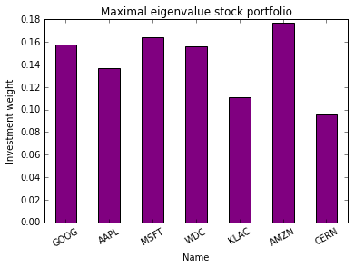
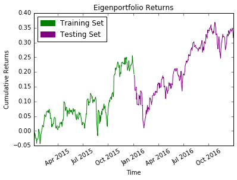
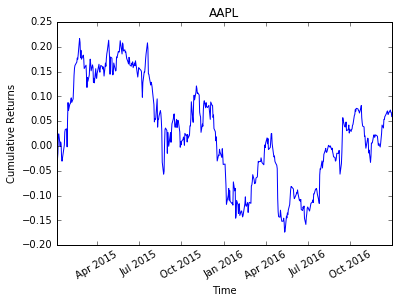
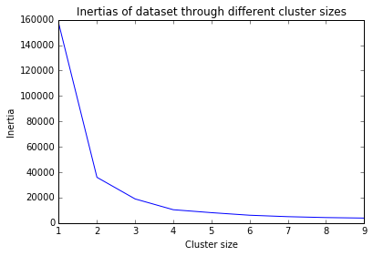
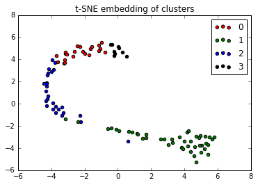

Unsupervised Machine Learning
This page shows my applications of K-means clustering, PCA, t-SNE and NMF to real world data.
The Problem:
Investors in the stock market wish to diversify the stock portfolios they invest into so as to minimise risk. This notion can be formalised through principal component analysis. The principal component of a dataset represents the direction of maximum variation of the data. It is an eigenvalue of the covariance matrix, which is why stock portfolios arrived at through PCA are called eigen-portfolios.
Intuitively, principal component analysis eliminates much of the risk of the data. My task was to produce a Python implementation of this by considering the S&P 500 index.
The Code:
# -*- coding: utf-8 -*- """ Created on Wed May 03 14:13:03 2017 @author: Ramin Tawab """ import pandas as pd, datetime as dt, matplotlib.pyplot as plt, numpy as np, matplotlib.patches as mpatches def getReturns(tickers): 'Get dataset of stock tickers in S&P 500 and compute returns dataframe' data = pd.read_csv(u'C:/Users/user/Downloads/all_stocks_5yr.csv', index_col = 0) df = pd.DataFrame(data) df = df[['close','Name']].pivot(columns='Name', values='close') df = df[tickers] df = df.dropna() df.index = pd.to_datetime(df.index) t0 = dt.datetime(2015, 1, 1) t1 = dt.datetime(2017, 1, 1) df = df.loc[t0:t1,:] return df.pct_change().iloc[1:,:] def getEigenPortfolio(returns, test): 'Calculate investment weights for list of tickers using PCA' in_sample = returns.iloc[: int(returns.shape[0] * (1 - test)), : ] covariance_matrix = in_sample.cov() eigenval, eigenvec = np.linalg.eigh(covariance_matrix) eigenportfolio = eigenvec[:,-1] / np.sum(eigenvec[:,-1]) eigenportfolio = pd.DataFrame(data=eigenportfolio, columns=['Investment weight'], index=returns.columns) return eigenportfolio def plotEigenportfolio(eigenportfolio): 'Plot the investment weights specified by the eigenportfolio' plt.figure() eigenportfolio.plot(kind='bar', color='purple', legend=False) plt.title('Maximal eigenvalue stock portfolio') plt.ylabel('Investment weight') plt.xticks(rotation=30) plt.show() return def plotCumulativeReturns(returns, eigenportfolio, test): 'Plot the cumulative returns of the eigenportfolio computed from a test period' plt.figure() i0 = np.arange(0, (int(returns.shape[0] * (1 - test)) + 1)) i1 = np.arange((int(returns.shape[0] * (1 - test)) + 1), returns.shape[0]) x0 = returns.index[:len(i0)] x1 = returns.index[len(i0):] cumulative_returns = (((1 + returns).cumprod(axis = 0)) - 1).dot(eigenportfolio).values plt.plot(x0,cumulative_returns[i0], 'green') plt.plot(x1,cumulative_returns[i1], 'purple') plt.title('Eigenportfolio Returns') plt.xlabel('Time') plt.ylabel('Cumulative Returns') plt.xticks(rotation=30) patch_1 = mpatches.Patch(color='green', label='Training Set') patch_2 = mpatches.Patch(color='purple', label='Testing Set') plt.legend(handles=[patch_1,patch_2], loc=0) plt.show() return def plotExample(returns, ticker): 'Plot a single ticker value over the time range to compare to Eigenportfolio' plt.figure() plt.plot(((( 1 + returns.loc[:,'AAPL']).cumprod(axis = 0)) - 1)) plt.title('AAPL') plt.xlabel('Time') plt.ylabel('Cumulative Returns') plt.xticks(rotation=30) plt.show() return def main(): 'Main function of the program' # tickers for which to develop an investment strategy tickers = ['GOOG', 'AAPL', 'MSFT','WDC','KLAC','AMZN', 'CERN'] # fraction of datapoints to use in testing set test = 0.50 # calculate the returns and eigenportfolio returns = getReturns(tickers) eigenportfolio = getEigenPortfolio(returns, test) # plot three graphs plotEigenportfolio(eigenportfolio) plotCumulativeReturns(returns, eigenportfolio, test) plotExample(returns, 'AAPL') return main()
The Solution:
The assigned weights by the principal component eigenvector produce the following stock portfolio:
The cumulative returns of following such a strategy are shown:
As a comparison, here are the cumulative returns of Apple's stocks over the same time period:
Apple's returns are more volatile and yield less than those of the stock portfolion. The program works as hoped. There are improvements that can be made but this was a short project that has met its goals.
The Problem:
The Oxford Poverty & Human Development Initiative holds a Multidimensional Poverty Measures dataset. To focus charitable efforts, it is neccessary to cluster different regions of the world into different levels of importance. Doing this precisely and informatively is a difficult task.
The Code:
# -*- coding: utf-8 -*- """ Created on Fri May 05 21:01:52 2017 @author: Ramin Tawab """ import pandas as pd, numpy as np from sklearn.cluster import KMeans import matplotlib.pyplot as plt from sklearn.manifold import TSNE from sklearn.preprocessing import StandardScaler def getFile(): 'fetch the dataset and parse as dataframe' data = pd.read_csv('C:/Users/user/Downloads/poverty.csv') df = pd.DataFrame(data) df = df[['MPI Urban','Headcount Ratio Urban', 'Intensity of Deprivation Urban', 'MPI Rural', 'Headcount Ratio Rural', 'Intensity of Deprivation Rural']] return df def elbowMethod(df): 'plot to determine the optimal number of clusters in the dataset' inertias = [] for i in range(1,10): kmeans = KMeans(n_clusters=i,random_state=0).fit(df.values) inertias.append(kmeans.inertia_) plt.figure() plt.title('Inertias of dataset through different cluster sizes') plt.xlabel('Cluster size') plt.ylabel('Inertia') plt.plot(range(1,10),inertias) plt.show() return def cluster(df): 'K-means cluster the data' scaler = StandardScaler() data = scaler.fit(df.values) data = scaler.transform(df.values) kmeans = KMeans(n_clusters=4,random_state=0).fit(data) return kmeans.labels_ def embed(df, c): 'construct embedded plot of the dataframe using t-SNE' model = TSNE(learning_rate=100) transformed = model.fit_transform(df.values) plt.figure() for i in range(4): t = [transformed[j] for j in range(len(transformed)) if c[j] == i] xs = [e[0] for e in t] ys = [e[1] for e in t] plt.scatter(xs,ys,c=['red','green','blue','black'][i],label=str(i)) plt.title('t-SNE embedding of clusters') plt.legend(loc=0) plt.show() return def summariseClusters(df,c): 'summary dataframe of clusters aggregated via mean' df['cluster'] = c Df = df.groupby('cluster').agg(np.mean) return Df def main(): 'main function to run' # Get the File df = getFile() # Use the elbow method to find ideal cluster size of four elbowMethod(df) # Cluster the dataset cl = cluster(df) # Embed the dataset and visualise the clusters embed(df, cl) # Summarise the clusters by aggregating the members through a mean print(summariseClusters(df, cl)) main()
The Solution:
The dataset needs to be partitioned into clusters through the K-means clustering algorithm. The optimal number of clusters can be determined through a tradeoff between minimising the inertia of the clustering and minimising the number of clusters. The elbow method is a heuristic that tells us to select the cluster corresponding to the last vertex of the cluster-inertia graph. Here, this corresponds to four clusters:
Next, we visualise the success of the clustering by embedding the high dimensional dataset into two dimensional real space using t-distributed neighbourhood embedding, t-SNE. This preserves the closeness between the points:
The members of each cluster are aggregated using their means:
MPI Urban Headcount Ratio Urban Intensity of Deprivation Urban \
cluster
0 0.154136 33.081818 46.459091
1 0.007977 2.172727 37.152273
2 0.057926 13.588889 42.081481
3 0.298333 58.255556 50.911111
MPI Rural Headcount Ratio Rural Intensity of Deprivation Rural
cluster
0 0.430727 77.387273 55.477273
1 0.031341 7.596364 39.075000
2 0.211593 44.770370 46.874074
3 0.592111 93.125556 63.411111
By inspection, sorting the clusters from most to least urgent areas of poverty results in the numbering: three, one, two, zero. This numbering can be used to devise a targeted relief strategy.
The Problem:
Recommender systems are in high demand. Non-negative matrix factorisation (NMF) is a data reduction technique that "learns" features of a dataset in an unsupervised ensemble. For text data, the features are topics. Thus, NMF is suitable for implementation in text-based recommender systems. In particular, my task was to create a program that recommends wines given your preferred wine choice from a dataset scraped from the WineEnthusiast.
The Code:
# -*- coding: utf-8 -*- """ Created on 30/11/2017 18:37:21 @author: Ramin Tawab """ import pandas as pd from nltk.stem.snowball import SnowballStemmer from nltk.corpus import stopwords from sklearn.feature_extraction.text import TfidfVectorizer from sklearn.decomposition import NMF from sklearn.preprocessing import normalize def formatter(s): 'string preprocesing pipeline for text analysis' formatted = ''.join([i for i in s.lower() if i.isalpha() or i in " '"]).split() formatted = [i for i in formatted if i not in stopwords.words('english')] stemmer = SnowballStemmer("english") formatted = [stemmer.stem(i) for i in formatted] return ' '.join(formatted) def getDataFrame(): 'parse data into pandas dataframe' data = pd.read_csv('C:/Users/user/Downloads/wine/wine.csv') df = pd.DataFrame(data) return df.iloc[:100,:] # limit to 100 rows for speed def getCorpus(Df): 'construct corpus of texts from dataframe' df = Df[['description','country','province','variety']] df['metric'] = df['description'] + ' ' + df['country'] + ' ' + df['province'] + ' ' + df['variety'] return [formatter(str(i)) for i in df['metric'].values] def vectorise(corpus): 'vectorise corpus of texts into tf-idf matrix' vectorizer = TfidfVectorizer() return vectorizer.fit_transform(corpus) def factorise(vector): 'apply non-negative matrix factorisation' nmf = NMF(n_components = 10) nmf_features = nmf.fit_transform(vector) nmf_features = normalize(nmf_features) return nmf_features def main(num): 'find wines most similar to wine in position num of dataset' # construst corpus of wine reviews into tf-idf matrix Df = getDataFrame() corpus = getCorpus(Df) vector = vectorise(corpus) # apply NMF to the matrix and compute dot product similarities factor = factorise(vector) factor = [factor[num].dot(j) for j in factor] Df['similarity'] = factor Df = Df.sort_values(by=['similarity'], ascending=False) return Df factor = main(0)
The Solution:
Running the above program and printing the first five lines of the resulting dataframe produces the following output:
Unnamed: 0 country description \
0 0 Italy Aromas include tropical fruit, broom, brimston...
26 26 Italy Pretty aromas of yellow flower and stone fruit...
22 22 Italy Delicate aromas recall white flower and citrus...
40 40 Italy Catarratto is one of Sicily's most widely farm...
52 52 Italy The Monica grape often shows a rustic or raw q...
designation points price province region_1 \
0 Vulkà Bianco 87 NaN Sicily & Sardinia Etna
26 Dalila 87 13.0 Sicily & Sardinia Terre Siciliane
22 Ficiligno 87 19.0 Sicily & Sardinia Sicilia
40 NaN 86 17.0 Sicily & Sardinia Sicilia
52 Dolia 85 14.0 Sicily & Sardinia Monica di Sardegna
region_2 taster_name taster_twitter_handle \
0 NaN Kerin O’Keefe @kerinokeefe
26 NaN Kerin O’Keefe @kerinokeefe
22 NaN Kerin O’Keefe @kerinokeefe
40 NaN NaN NaN
52 NaN NaN NaN
title variety \
0 Nicosia 2013 Vulkà Bianco (Etna) White Blend
26 Stemmari 2013 Dalila White (Terre Siciliane) White Blend
22 Baglio di Pianetto 2007 Ficiligno White (Sicilia) White Blend
40 Feudo Montoni 2011 Catarratto (Sicilia) Catarratto
52 Cantine di Dolianova 2010 Dolia (Monica di Sa... Monica
winery similarity
0 Nicosia 1.000000
26 Stemmari 0.935817
22 Baglio di Pianetto 0.929746
40 Feudo Montoni 0.925351
52 Cantine di Dolianova 0.877521
The similarity is computed from a factored tf-idf matrix of the wine reviews column. However, it is noteworthy that both the taster_name, the variety, the province, the points and the price are all very similar. The recommender system is very powerful considering it was written in a few lines.